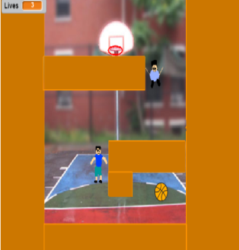

The objective of this project was to get an introduction to coding in scratch and even our first real introduction to actual coding. We were allowed entire freedom on the game or story we wanted to design. My partner and I created a game called Hoops. We named it that as the title relates to basketball, which is the basis of our game. In this game you are trying to guide a basketball into it's designated hoop using arrow keys. The catch is that each level has a certain number of obsticles that you are required to get past in order to get to the hoop. When you get the ball into the hoop you exceed to the next level. There are a total of 3 levels in the game and the number and difficulty of obsticles increases as the level number gets higher. On top of that, each player has only 3 lives and everytime you hit an obsticle you lose a life. After all 3 lives are lost you are required to go back to the start of level 1 regardless your current level number at the time you lost your last life. This project taught me a lot of the basics in writing HTML and CSS and how to write code with other people and provide and ask for information when needed.

my scratch project
check out my scratch project
september 2017 - september 2017 (with Arav Vyawahare)